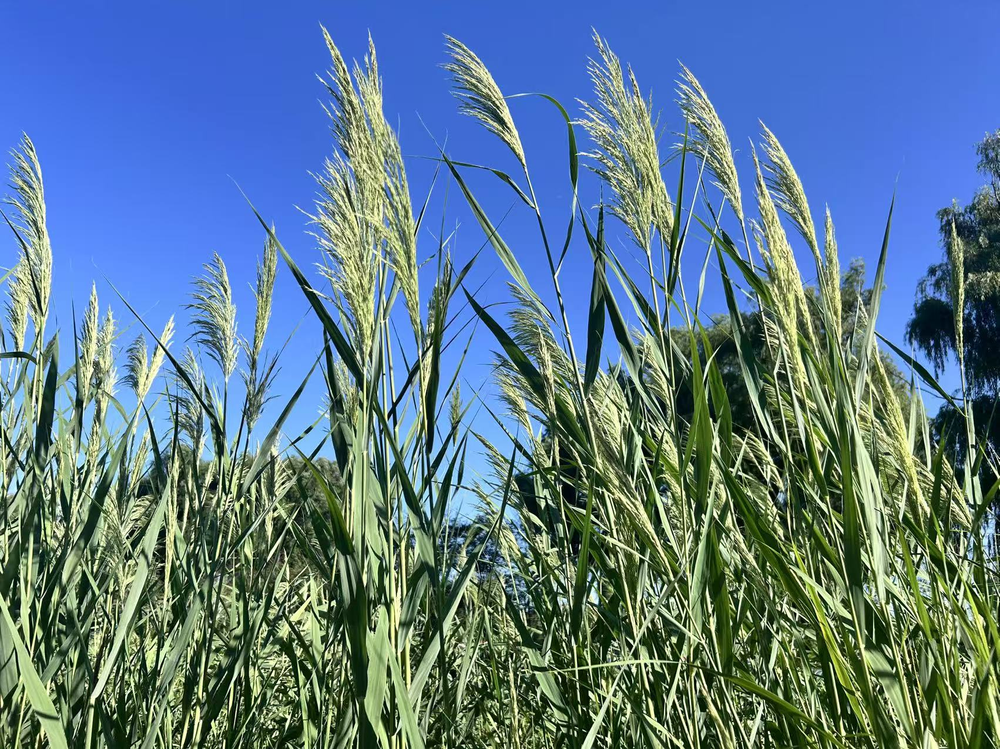

篦齿眼子菜
沉水植物，有助于维持水体透明度和水生态平衡。
千屈菜
多年生挺水草本，生于湿地及浅水区，花紫红色，花期6–9月。

睡莲
多年生水生草本，具浮水叶与沉水叶；开花期夏季，常用于湖泊生态修复与景观营造。

荷
多年生挺水草本；地下茎肥厚（藕），花单生，大型，观赏和食用价值高。

芦苇
多年生禾本科草本，株高2–4米，耐盐碱、耐涝，根系发达，固沙防风。

假稻
多年生湿生草本，具匍匐茎，常用于水土保持与生态修复。

菖蒲
多年生挺水草本，叶剑形，根茎芳香，可入药，适应性强。

黄菖蒲
多年生挺水草本，花黄色艳丽，具观赏性和水质净化作用。
香蒲
多年生挺水草本，株高1.5–2.5米，具良好水质净化功能。

慈菇
多年生挺水草本，叶箭头形，块茎可食，具经济和生态价值。

泽泻
多年生挺水草本，叶基生，花小白色，块茎可入药。

黑三棱
多年生挺水草本，花序球形，常用于湿地生态修复。

荆三棱
多年生挺水草本，株高0.5–1.5米，对湿地生物多样性有贡献。

水葱
多年生挺水草本，茎圆柱形，根茎膨大为荸荠，可食用。

菰
多年生挺水草本，高1–3米；茎基部膨大（被黑粉菌寄生后形成“茭白”）。叶片长披针形，扁平。圆锥花序大型，花期夏秋季。其颖果可食用，膨大茎部为常见蔬菜，兼具水质净化与栖息地营造功能。
花蔺
多年生挺水草本，株高1–2米，叶细长。喜湿润环境，水深10–50厘米。花期6–9月，花序呈圆锥状。具较强水质净化和固土功能。